Comparativa de los presupuestos y liquidaciones municipales

Nota: Los gráficos de este artículo proceden de la herramienta interactiva de liquidaciones del Foro Social, en concreto de las páginas de ingresos, gastos por clasificación económica y gastos por programas, donde pueden consultarse de forma interactiva.
El PRESUPUESTO anual supone la base fundamental sobre la que se asienta un ayuntamiento. En él se establecen las líneas maestras sobre las que se pretende ejercer la acción de gobierno, es decir, la declaración de intenciones de los gobernantes. Los pasos para la elaboración del texto se establecen en los artículos 168 y 169 del RDL 2/2004, de 5 de marzo, por el que se aprueba el texto refundido de la Ley Reguladora de Haciendas Locales (TRLRHL):
- Elaboración del documento desde Secretaría y formulación por parte del Alcalde.
- Aprobación inicial del texto por el Pleno con anterioridad al 15 de octubre del año anterior.
- Plazo de exposición pública.
- Aprobación definitiva del texto por el Pleno con anterioridad al 31 de diciembre; de no ser así, se entiende automáticamente prorrogado el del año en curso.
Pero, si el Presupuesto constituye la declaración de intenciones de los gobernantes, el documento que de verdad refleja el resultado final de su labor es la CUENTA GENERAL (Liquidación); por tanto, es este documento el que merece un estudio más pormenorizado para poder valorar debidamente su acción de gobierno. Los pasos para la elaboración de este documento quedan establecidos en el artículo 212 del mismo RDL 2/2004, de 5 de marzo:
- Formulación por parte del Alcalde y aprobación por la Comisión Informativa competente antes del 1 de junio del año posterior, previo paso por Intervención.
- Aprobación por parte del Pleno hasta el día 1 de octubre.
- Remisión al correspondiente Tribunal de Cuentas hasta el día 15 de octubre.
A continuación mostramos una breve comparativa entre los Presupuestos iniciales y las Liquidaciones finales (resultado real) de nuestro Ayuntamiento desde el año 2010, primero del que tenemos datos, hasta el último ejercicio liquidado correspondiente al año 2024. Es de destacar que este periodo comprende la acción de gobierno de dos partidos políticos: el P.P. desde el principio hasta junio de 2019, y el PSOE a partir de esta fecha hasta la actualidad.
Los datos del Ejercicio 2025, tanto del Presupuesto como de la Liquidación, sólo se reflejan en el Estado de Ingresos ya que, para el Estado de Gastos, no se aporta el desglose por partidas y, por tanto, no permite establecer la comparativa al igual que en los ejercicios anteriores. En el momento que se publique el documento de la Cuenta General de dicho año, esperamos poder contar con estos datos.
Para poder llevar a cabo la comparativa, los importes reflejados en las liquidaciones son los correspondientes a los siguientes conceptos:
- Con relación al Estado de Ingresos, los “derechos reconocidos netos”: que reflejan los recursos reales obtenidos en el ejercicio, independientemente de si se ha cobrado o no.
- Con relación al Estado de Gastos, las “obligaciones reconocidas netas”: que reflejan los compromisos firmes de pago asumidos durante el ejercicio; es decir, el gasto real.
Estado de ingresos
Se clasifica de dos formas:
1ª.- ORGÁNICA: informa sobre quién ingresa (en este caso el Ayuntamiento de Campo de Criptana).
2ª.- ECONÓMICA: cómo y para qué se ingresa. Se agrupa en tres bloques:
1.- Ingresos corrientes
Los habituales de la actividad del Ayuntamiento. Comprenden los capítulos del 1 al 5. Se dividen en:
1.1.- Impuestos directos
Gravan la fuente de la renta, frutos del patrimonio o de una actividad. Son los siguientes:
- Impuesto de Bienes Inmuebles (IBI)
- Impuesto de Vehículos de Tracción Mecánica (IVTM)
- Impuesto de Actividades Económicas (IAE)
- Impuesto del Valor de los Terrenos de Naturaleza Urbana (IVTNU)
NOTAS:
- Salvo en los ejercicios de 2015, 2016, 2020 y 2025, el presupuesto inicial siempre es más alto que la liquidación final; destaca el año 2017 donde el desvío superó el 10 %.
- Destaca una caída en la recaudación en 2023 a niveles de 2012; y el significativo aumento al año siguiente, 2024, situándolo en el segundo año de más recaudación del histórico sólo superado por 2020.
- De los ingresos “propios” obtenidos por el Ayuntamiento, es la partida más importante, suponiendo un 30 % del total de la liquidación final de ingresos del año 2024, y un 36 % del presupuesto total para el año 2025.
1.2.- Impuestos indirectos
Básicamente el Impuesto de Construcciones y Obras (ICIO).
NOTAS:
- Destaca la abultada diferencia en 2010 y 2011 entre lo presupuestado y la liquidación final muy inferior. A partir de ahí la cantidad que se recauda supera lo presupuestado en los sucesivos años hasta llegar a 2023 y 2024, donde se vuelve a repetir la situación de los primeros años.
- La cantidad presupuestada para 2025 desciende sobre la de los dos años anteriores y se consigna una cantidad similar a lo verdaderamente recaudado en 2024. Finalmente la liquidación final de 2025 supera en un 65 % al presupuesto; para 2026 se vuelve a aumentar la cantidad presupuestada.
1.3.- Tasas, precios públicos y contribuciones especiales
Reflejan cobros por la realización de una contraprestación municipal.
NOTAS:
- Destaca de nuevo el dato de 2010 con una recaudación muy inferior a lo presupuestado.
- Otro dato destacable es año 2011 como año con mayor recaudación del histórico.
- Desde 2020 hasta 2024 las cantidades presupuestadas superan sensiblemente lo recaudado, con la excepción de 2022; en 2025 se consigna en el Presupuesto un importe inferior al de los presupuestos anteriores parecida a las liquidaciones reales. Finalmente la liquidación supera con mucho a lo presupuestado (15 %) superando en importe al año 2011 como mayor recaudación; choca que, a pesar de este dato, para 2026 se presupuesta de inicio menos que en 2025.
- Tras los impuestos directos, es la segunda fuente de financiación “propia” más importante, suponiendo un 20,50 % del total de la liquidación final del ejercicio 2024, y un 23,50 % del total presupuestado para el año 2025.
1.4.- Transferencias corrientes
Transferencias recibidas del Estado (PIE: Participación Impuestos Especiales y compensación beneficios fiscales); y de las CCAA (Servicios Sociales y Organismos autónomos).
NOTAS:
- La liquidación final es siempre superior a lo presupuestado de inicio.
- Destaca el significativo aumento de la recaudación obtenida a partir del año 2021 en adelante.
- Es la principal partida en la financiación del Ayuntamiento, ascendiendo al 36 % del total de la liquidación final del ejercicio 2025, y un 39 % del total presupuestado para el año 2026.
1.5.- Ingresos patrimoniales
Rentas obtenidas del patrimonio municipal como: intereses de depósitos, alquiler de edificios municipales o concesiones varias.
NOTAS:
- La tónica de este capítulo es que la liquidación final es inferior a lo presupuestado de inicio. Destaca de nuevo el dato de 2010 con un desfase de más del 72 %.
- También de destacar es el año 2024 donde se presupuesta de inicio la mitad que en los años anteriores y la recaudación real multiplica por cinco lo presupuestado. Situación que se vuelve a repetir en el año 2025.
2.- De capital
Aumentan el pasivo municipal y deben devolverse, por lo que están sometidos a una legislación que limita la capacidad de endeudamiento de la Administración. Comprenden los capítulos 6 y 7. Se componen de:
2.1.- Enajenaciones reales
Ventas de fincas municipales.
NOTAS:
- Excepto 2021, 2022 y 2023, no se presupuesta nada de inicio.
- Destaca la recaudación obtenida en los ejercicios 2014, 2024 y 2025 muy por encima de sobre todos los demás años.
2.2.- Transferencias de capital
Ingresos de naturaleza no tributaria destinados a financiar gastos de capital. Ejemplo: fondos de la UE.
NOTAS:
- El presupuesto inicial de este capítulo suele ser cero, con excepción de 2010 y 2011 donde se presupuesta cantidades entorno a los 400.000 euros, y 2022 donde se presupuesta la mitad.
- Destaca la recaudación obtenida en los ejercicios 2010, 2024 y 2025 sobre todos los demás años.
3.- Financieros
Se obtienen de la recaudación de depósitos inmovilizados o de créditos. Comprenden los capítulos 8 y 9. Se componen de:
3.1.- Activos financieros
Devolución de fianzas o depósitos inmovilizados.
NOTAS:
- La tónica de este capítulo es de una recaudación por debajo de lo que se presupuesta de inicio.
- Destacan los años 2010 y 2011 donde el presupuesto inicial es el más alto del histórico con mucha diferencia y, por contra, las liquidaciones son de las más bajas.
3.2.- Pasivos financieros
Créditos solicitados a entidades privadas.
NOTAS:
- El presupuesto inicial es nulo en todo el histórico excepto el año 2010 donde se presupuestan 656.180,82 euros.
- Destacan los ingresos de los años 2010, 2011 y 2012. También destacable la cantidad reflejada en 2021 y 2023, aunque muy lejos de las anteriores. El dato para 2025, supera todo lo anterior.
Total Estado de Ingresos
NOTAS:
- Excepto en 2010, la liquidación final siempre supera al presupuesto inicial.
- En cuanto al presupuesto inicial es muy llamativo los años 2010 y 2011; a partir de ahí hay un descenso hasta el año 2020 donde aumentan considerablemente y de forma paulatina hasta 2024 en que se supera por primera vez los 12 millones, cifra que se repite en el presupuesto consignado para 2025.
- En cuanto al resultado, se observa un punto de inflexión en el año 2020 donde se superan con creces los 12 millones (en todos los años anteriores sólo se había llegado a esta cifra en 2014); aumentando esta cifra en todos los años posteriores destacando los ejercicios 2024 y 2022, con la recaudación más alta del histórico superando los 14 y 15 millones respectivamente.
- Finalmente 2025 será el año de mayor recaudación del histórico superando a lo presupuestado de inicio en un 30 %.
- Como se observa la principal fuente de financiación del Ayuntamiento son las transferencias corrientes que se reciben de otros organismos, que ascendieron en el último ejercicio liquidado de 2025 a un 36 % del importe total de derechos reconocidos netos, y que aumentan el presupuesto inicial en más de 3.500.000 de euros (un 29 %).
Estado de gastos
Se clasifica de tres formas:
1ª.- ORGÁNICA: informa sobre quién realiza el gasto (en este caso el Ayuntamiento de Campo de Criptana).
2ª.- ECONÓMICA: informa sobre cómo y para qué se gasta. Se agrupa por CAPÍTULOS y consta de cuatro bloques:
1.- Gastos corrientes
Los habituales y necesarios para el correcto funcionamiento de los servicios públicos. Comprenden los capítulos del 1 al 4. Se dividen en:
1.1.- Personal
- Órganos de gobierno del personal directivo
- Personal funcionario
- Personal laboral
- Incentivos al rendimiento
- Gastos a cargo del empleador
NOTAS:
- El presupuesto de cada año supera al anterior. En 2024 se superan por primera vez los 6 millones.
- En cuanto al gasto final, hasta 2019, se alternan años donde se supera el presupuesto otros que no. Esta tendencia se rompe en 2020, a partir de aquí el gasto real supera con mucho a lo presupuestado de inicio, con especial énfasis en los años 2022 y 2023 donde esta diferencia supera con creces los 800.000 euros.
1.2.- Gastos corrientes y servicios
- Arrendamientos y cánones
- Reparación, mantenimiento y construcción
- Material, suministros y otros
- Indemnizaciones por despido
- Gastos en edición y distribución
- Trabajos realizados por administraciones y entidades públicas
- Trabajos por instituciones sin fines de lucro
NOTAS:
- En cuanto al presupuesto, en el año 2015 vemos un descenso notable con relación a los años anteriores; a partir de aquí se observa un progresivo aumento.
- En cuanto a la liquidación, hasta 2020 se alternan años donde se supera el presupuesto otros que no, con la anomalía de 2018 donde se dispara el gasto. A partir de 2021 el gasto real supera a lo presupuestado de inicio, con especial énfasis en el año 2022.
1.3.- Financieros
- Préstamos y otras operaciones financieras
- Intereses de demora y gastos financieros
NOTAS:
- En todos los años el presupuesto inicial está por encima de la liquidación final. Entre los años 2010 al 2014 se observan las cantidades más altas en el presupuesto y las mayores diferencias con la liquidación.
1.4.- Transferencias corrientes
Aportaciones a otras entidades o administraciones para financiar operaciones corrientes:
- A la Administración del Estado
- A Entidades Locales
- A empresas privadas
- A familias e instituciones sin fines de lucro
- Al exterior
NOTAS:
- Con la excepción de los años 2014 y 2023, el presupuesto inicial es superior a la liquidación.
- Destaca una pronunciada disminución tanto del presupuesto como de la liquidación a partir de 2018.
2.- Fondo de contingencia
Comprende el capítulo 5.
NOTAS:
- Se empieza a dotar en 2017 y no se ha gastado ni un euro.
3.- De capital
Gastos extraordinarios en inversiones reales o su financiación. Comprenden los capítulos 6 y 7. Se dividen en:
3.1.- Inversiones reales
Creación de nuevos equipamientos o infraestructuras y adquisición de bienes inventariables. Son:
- Inversiones en bienes e infraestructuras de interés general
- Inversiones y reparaciones en infraestructuras del interés general
- Inversiones asociadas al funcionamiento operativo de los servicios
- Inversiones en reparación del funcionamiento operativo de los servicios
- Gastos en inversiones de carácter inmaterial
- Gastos en inversiones en bienes patrimoniales
NOTAS:
- Con la excepción de 2012, el presupuesto inicial siempre es inferior a la liquidación.
- El año 2010 es anómalo tanto en las cantidades presupuestadas como en la liquidación siendo las más altas del histórico.
- Destaca también el año 2024 donde se reducen a la mitad tanto el presupuesto como la liquidación.
3.2.- Transferencias de capital
Pago de créditos para financiar operaciones de capital que hayan financiado operaciones reales.
- A la Administración del Estado
- A la Administración de las Comunidades Autónomas
- Vehículos
NOTAS:
- Los movimientos en esta partida se dan entre los años 2015 y 2020 en donde el gasto real es abultadamente superior a lo presupuestado de inicio.
4.- Financieros
Gastos en la adquisición de activos financieros o para la amortización de los préstamos. Comprenden los capítulos 8 y 9.
4.1.- Activos financieros
Adquisición de activos financieros para la construcción de depósitos y fianzas exigidos.
- Prestaciones fuera del sector primario
- Adquisición de acciones y participaciones fuera del sector público
NOTAS:
- Excepto 2012 y 2016, la cantidad presupuestada supera al resultado final; destacando los años 2010 y 2011 donde el presupuesto y la diferencia con la liquidación final son muy superiores al resto de los años.
4.2.- Pasivos financieros
Pago de amortización de pasivos financieros (deuda).
- Amortización de operaciones de préstamos en curso
NOTAS:
- Hasta el año 2018, la tónica es que el presupuesto sea menor que la liquidación final, con las anomalías 2014 y 2017 donde la diferencia es muy significativa. A partir del año 2020, tanto lo presupuestado como la liquidación, y las diferencias entre ambos, se reducen drásticamente con relación a los años anteriores.
Total Estado de Gastos (Económica)
NOTAS:
- El presupuesto inicial siempre es inferior a la liquidación (con la excepción de 2012).
- En cuanto al presupuesto inicial, igual que en el Estado de Ingresos, es muy llamativo los años 2010 y 2011; a partir de ahí hay un descenso hasta el año 2020 donde aumentan considerablemente y de forma paulatina hasta 2024 en que se supera por primera vez los 12 millones, hecho que se vuelve a repetir en 2025.
- En cuanto al resultado, es llamativo el elevado gasto de 2010, sólo superado por los tres últimos años, 2022 y 2023, donde se superan por primera vez los 14 millones, y el 2024, con una cantidad muy similar al 2010 superando los 13 millones.
- Los años 2016 y 2017 también destacan por la significativa diferencia entre la liquidación final y el presupuesto inicial, muy inferior.
- Con los datos de 2025, entre los “gastos de personal” (53 %) y los “bienes corrientes y servicios” (41 %), suman entorno al 95 % del Presupuesto, sin menoscabo de una posible mayor racionalización del gasto en las partidas que componen el segundo bloque, la realidad es que el gobierno de turno que se encuentre al frente de nuestro Ayuntamiento, independientemente de su ideología, tiene un margen de acción muy escaso para realizar sus políticas propias.
3ª.- POR PROGRAMAS (funcional): nos informa en qué se gasta. Siguiendo esta clasificación, los gastos se agrupan en seis ÁREAS DE GASTO:
1ª.- Deuda pública
NOTAS:
- La tónica es la de presupuestar cantidades superiores al gasto real, con las excepciones de 2014, 2015 y 2017; con unas diferencias muy abultadas entre ambas cantidades.
- La tendencia es a la baja con una reducción drástica a partir del año 2018, a excepción de los dos últimos años en los que se produce un sensible aumento. El presupuesto para 2025 está en la línea de los dos últimos años.
2ª.- Servicios públicos básicos
- Seguridad
- Tráfico
- Protección civil
- Extinción de incendios
- Vivienda y urbanismo
- Vías públicas
- Agua
- Residuos
- Limpieza viaria
- Cementerio
- Alumbrado público
- Medio Ambiente
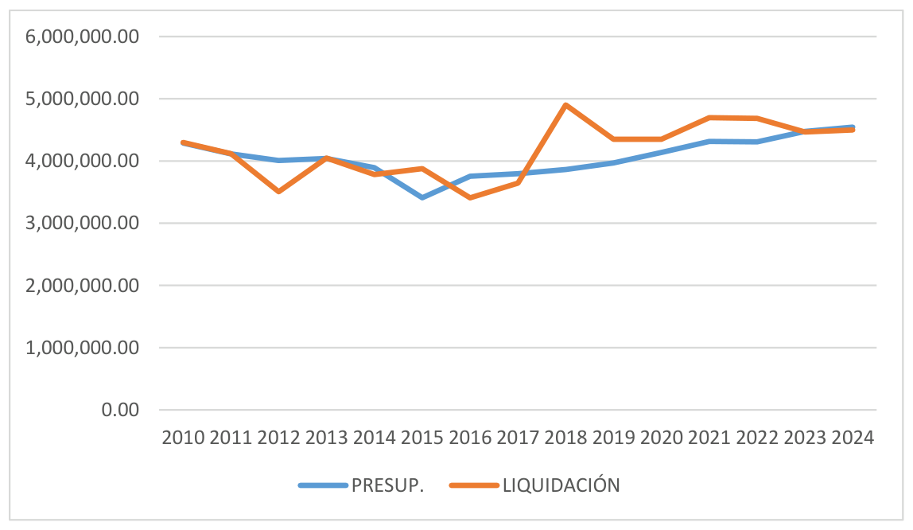
NOTAS:
- El presupuesto se mantiene estable durante todos los años del histórico. Se alternan los ejercicios en los que el presupuesto está por encima del gasto final y viceversa. Destaca el abultado gasto del ejercicio 2018.
3ª.- Actuación de protección y promoción social
- Prestaciones de empleados
- Servicios Sociales
- Política de empleo
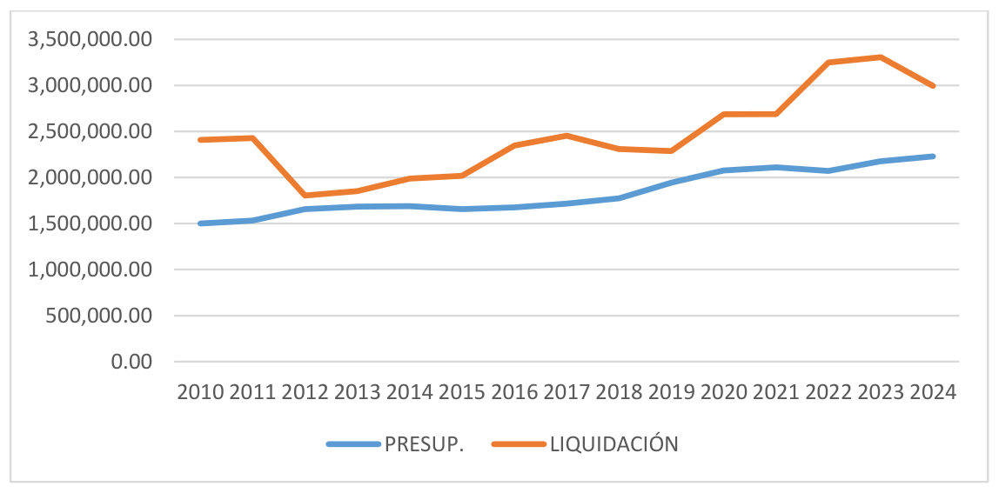
NOTAS:
- En todos los ejercicios la liquidación es muy superior a lo presupuestado inicialmente, con especial hincapié en los años 2010 y 2011, y 2022 y 2023. Es llamativo que para 2025 de inicio se vuelve a presupuestar una cantidad similar a los años anteriores a pesar de estas diferencias.
4ª.- Producción de bienes públicos de carácter permanente
- Salubridad pública
- Educación
- Cultura
- Gestión de patrimonio
- Ocio y tiempo libre
- Festejos
- Deporte
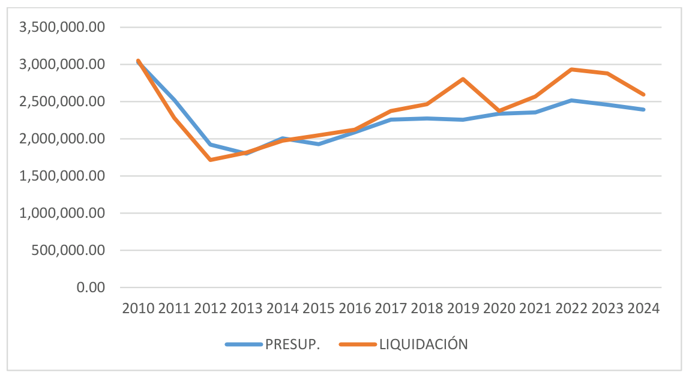
NOTAS:
- Con excepción de los años 2011, 2012 y 2014 en que la liquidación final es sensiblemente inferior al presupuesto, la tónica es la contraria, aumentando la diferencia a partir de 2019.
5ª.- Actuaciones de carácter económico
- Agricultura
- Ferias y comercio
- Promoción del turismo
- Desarrollo empresarial
- Transporte público
- Recursos hidráulicos
- Caminos vecinales
- Sociedad de la información
- Gestión del conocimiento
- OMIC
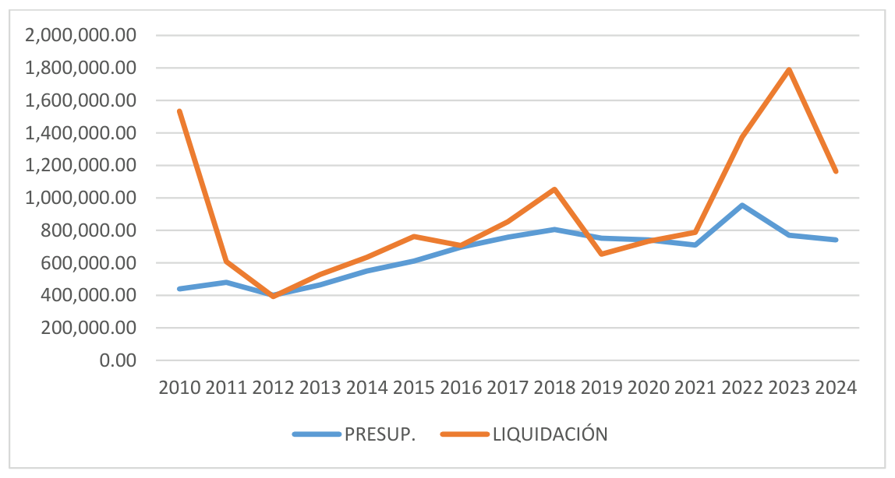
NOTAS:
- La tónica general es de un presupuesto muy inferior al gasto final, excepto 2012, 2019 y 2020; destacando los años 2010 y 2023 donde la diferencia es muy abultada. Llama la atención que para 2025 se presupuesta una cantidad muy similar a 2024 a pesar de que la liquidación de este año superó esa cantidad en un 56 %.
6ª.- Acciones de carácter general
- Órganos de gobierno
- Administración general
- Coordinación de Entidades Locales
- Participación ciudadana
- Juventud
- Fondo de contingencia
- Política económica y fiscal
- Gestión del sistema tributario
- Gestión del patrimonio
- Transferencias de la Administración del Estado
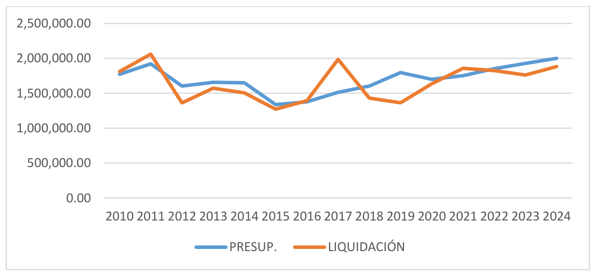
NOTAS:
- La tónica es de un presupuesto superior al gasto final, con la excepción de algún ejercicio entre los que destaca 2017 por lo elevado de la diferencia de importes.
Total Estado de Gastos (Programas)
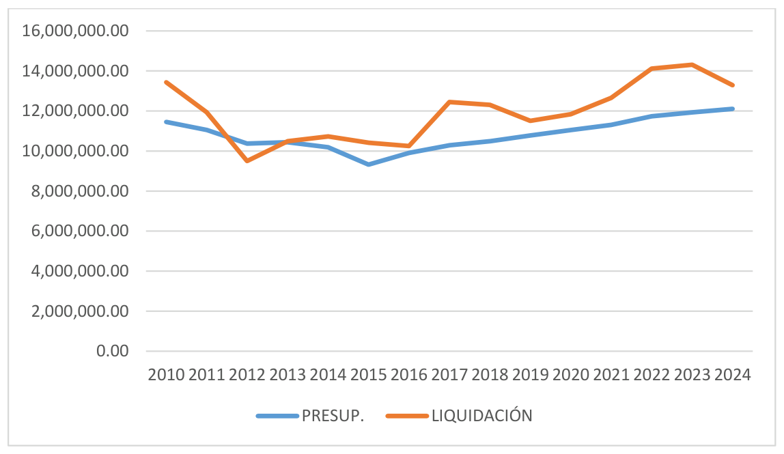
NOTAS:
- Sirven las mismas valoraciones descritas en la clasificación Económica.
Otros (dentro de la clasificación Económica)
Energía eléctrica
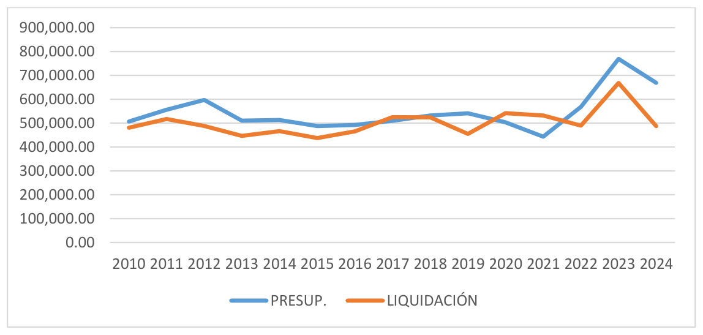
NOTAS:
- Las cantidades presupuestadas de inicio superan siempre a la liquidación final, con la excepción de 2017, y sobre todo 2020 y 2021.
- Destaca el significativo aumento tanto del presupuesto como de la liquidación final del año 2023; elevado presupuesto que se mantiene también para 2024 aunque aquí el resultado final sufre una importante caída en el gasto.
Combustibles y carburantes
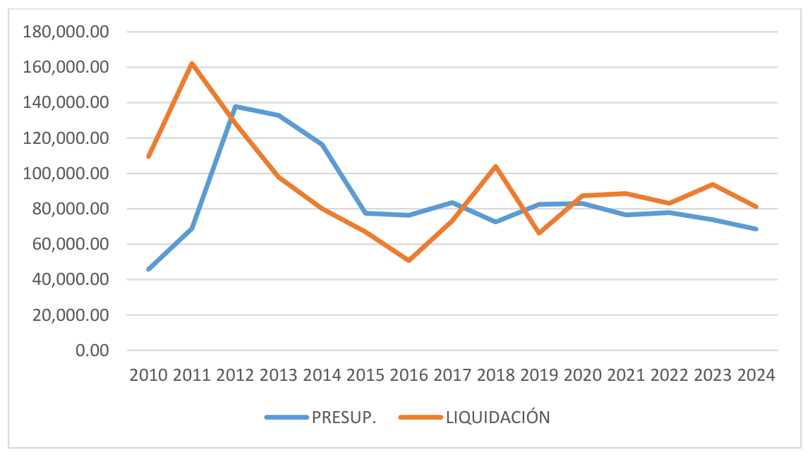
NOTAS:
- En cuanto al presupuesto se mantiene estable durante todo el histórico, excepto los años 2012 a 2014 donde hay un aumento considerable de las cantidades.
- En cuanto a la liquidación se alternan los años en que supera al presupuesto y viceversa, tendencia que se invierte a partir de 2020 donde el gasto viene superando al presupuesto todos los años.
Otros suministros
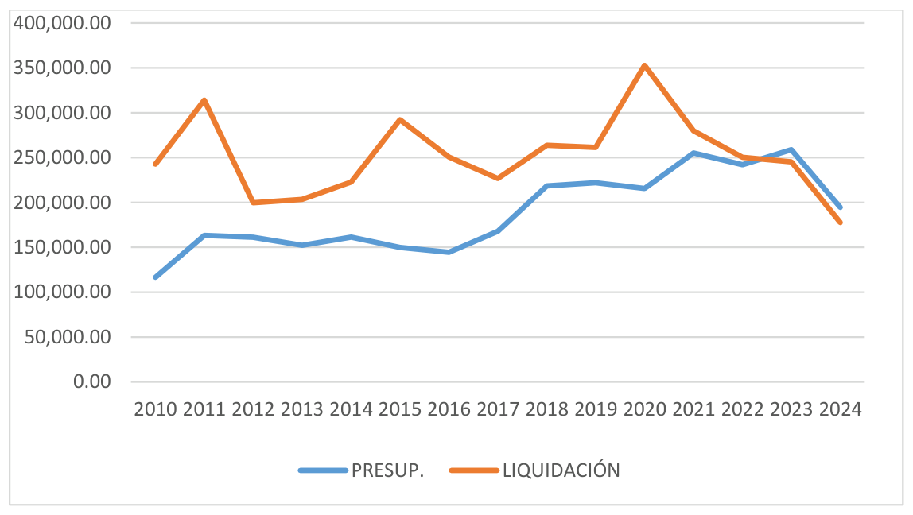
NOTAS:
- Siempre se ha liquidado más de lo presupuestado de inicio, excepto 2023 y 2024 donde se ha invertido esta tendencia. En este último año se observa un considerable descenso del gasto real con relación a los años anteriores.
Telecomunicaciones
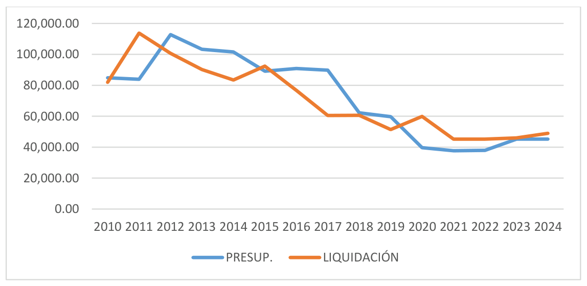
NOTAS:
- Hasta 2019, el presupuesto inicial superaba al gasto final con la excepción de 2011 y 2015; a partir de 2020 se invierte la tendencia y el gasto supera al presupuesto en todos los ejercicios. Aun así se observa una notable reducción del gasto real en esta partida a partir de ese año.
Seguros
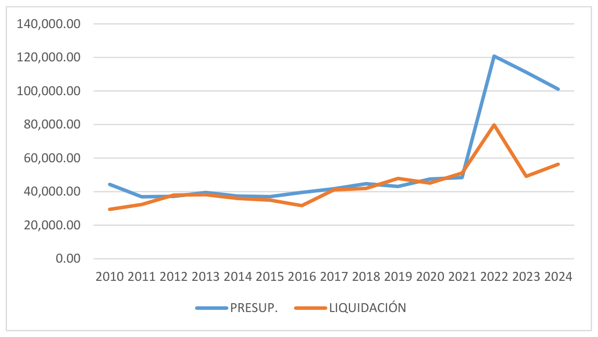
NOTAS:
- Las cantidades presupuestadas superan al gasto final en todos los años excepto en 2012, 2019 y 2021. Cabe destacar el exponencial aumento en las cantidades presupuestadas en los tres últimos ejercicios, frente a un gasto final que ha sido similar a los años anteriores.
Atenciones protocolarias
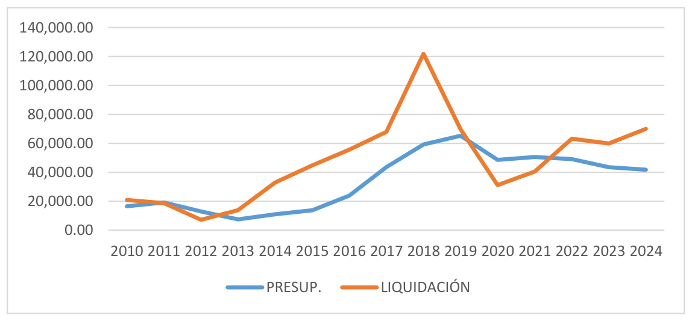
NOTAS:
- Salvo excepciones, la tónica es de un presupuesto por debajo del gasto final. En el último año 2024 se produce un aumento del gasto, aunque sin llegar al nivel de 2018, donde el gasto es muy superior al resto de años.
Publicidad y propaganda
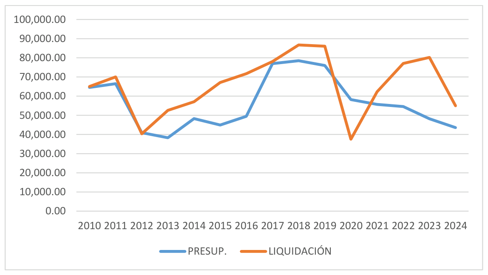
NOTAS:
- Salvo excepciones, la tónica es de un presupuesto por debajo del gasto real. En el último año 2024 se produce una reducción significativa del gasto con relación a los años anteriores con excepción del 2020, donde el gasto real es muy bajo.
Gastos diversos
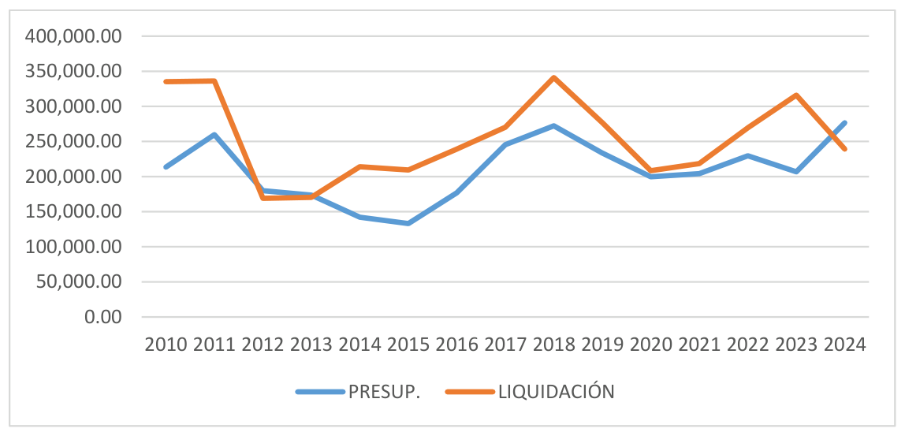
NOTAS:
- Salvo excepciones, la tónica es de un presupuesto por debajo del gasto real. En el último año 2024 se produce una reducción significativa del gasto con relación a los años anteriores aunque el presupuesto es muy alto.
Limpieza y aseo
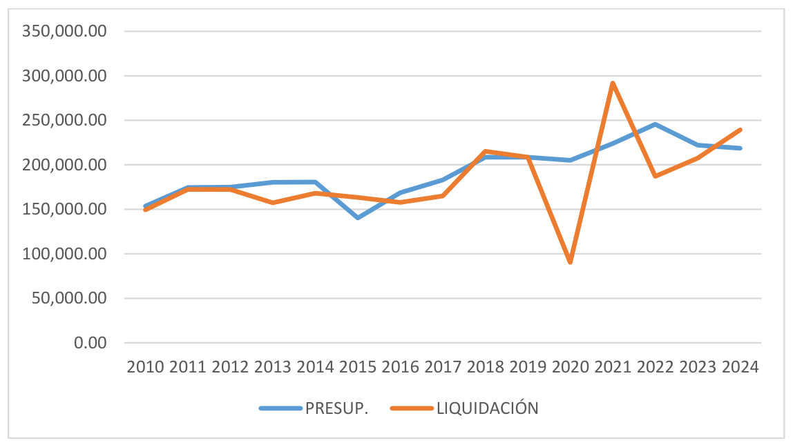
NOTAS:
- Salvo excepciones, la tónica es de un presupuesto por encima del gasto real. En el último año 2024 se produce un aumento del gasto con relación a los años anteriores.
Estudios y trabajos técnicos
Se deben de adjudicar mediante contratos de servicio (Ley de Contratos del Sector Público). Esta partida es fundamental para la modernización de la gestión municipal, permitiendo externalizar conocimientos especializados para el diseño de políticas públicas.
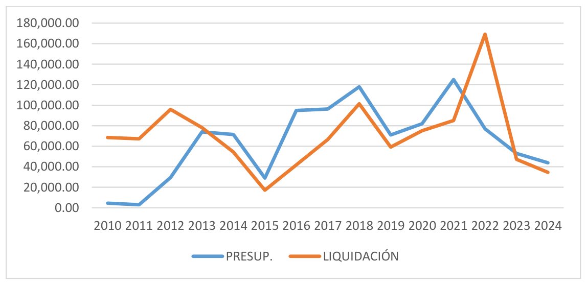
NOTAS:
- En 2010, 2011 y 2012 el gasto real es exponencialmente superior al presupuestado de inicio.
- A partir de 2014 la tendencia se invierte y el presupuesto es superior a lo que se gasta con la excepción del año 2020 donde el gasto final es muy elevado. En 2024 se produce una reducción drástica del gasto real.
Trabajos realizados por empresas
Estas contrataciones permiten a los ayuntamientos gestionar servicios que no ejecutan directamente con su propio personal.
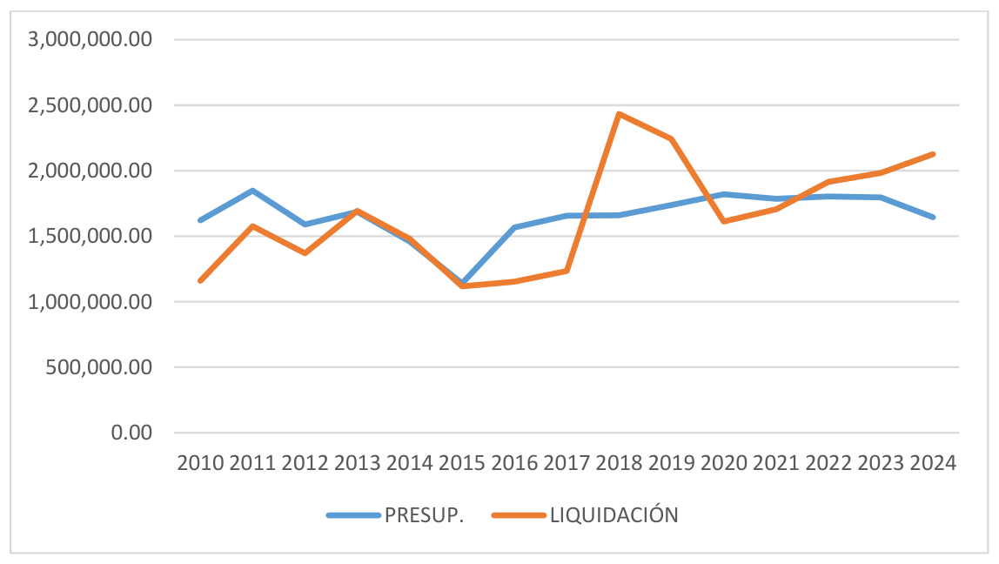
NOTAS:
- Se observa un presupuesto que se mantiene más o menos constante durante todo el histórico. En cuanto al gasto final, algunos años está por debajo del presupuesto y otros años lo supera con especial hincapié en los años 2018 y 2019 donde el gasto está muy por encima del resto. En el año 2024 vuelve a haber un aumento significativo del gasto con relación a años anteriores y también con relación a la baja cantidad presupuestada de inicio.
Foro Social de Campo de Criptana
Por una democracia más participativa
El Foro Social de Campo de Criptana es un espacio socio-político de participación ciudadana, abierto, horizontal y no partidario que trabaja por una democracia más participativa principalmente a nivel municipal, pero también global.